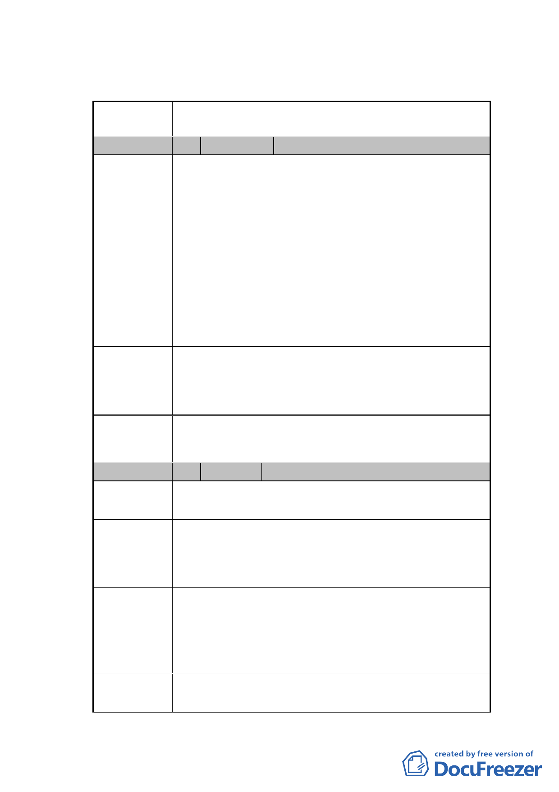

臺北市都市計畫委員會 公民或團體陳情意見綜理表
案名
擬定臺北市南港區鐵路地下化沿線土地（編號 BR-1 原
臺鐵調車場公園以西部分）細部計畫案
編 號 1 陳情人 新北市政府
陳情地點
陳情理由
建議辦法
查旨案基地內含臺北市南港區玉成段二小段
254-1、255-1、 269-1、287 及 287-1 地號等 5 筆本
市有土地，配合細部計畫擬定，使用分區由策略型工業
區變更為特定商業區，依都市計畫法第 27 條之 1 規定，
本府應回饋一定之公共設施用地、可建築土地或樓地板
面積予貴市，又本案應回饋之範圍由於已先行確定位置
為本案基地東側之公園用地，查該土地權屬為中華民
國，管理機關為交通部臺灣鐵路管理局，故由其先行代
為回饋，本府爰未回饋土地，先予敘明
針對交通部臺灣鐵路管理局先行代本府回饋之土
地，本府仍負歸墊義務，惟相關之土地產權移轉作業涉
及土地法第 25 條規定，為利後續回饋、歸墊等作業，
建議於細部計畫書內載明本府應辦理事項。
委員會 計畫書第 17 頁有關協議書約定回饋內容及時程，訂定
決議 人補列新北市政府。
編 號 2 陳情人 交通部臺灣鐵路管理局
陳情地點
陳情理由 1
建議辦法 1
陳情理由 2
細部計畫書第 3 頁之「參、主要計畫概要」中，敍明
「採都市更新方式辦理開發（詳圖二及圖三）」，惟「圖
三、開發方式示意圖」之圖例標示為「自辦更新範圍」，
不符臺鐵為政府機關之實際情形。
修改圖三之圖例標示「自辦更新範圍」為「都市更新
範圍」，以利臺鐵局後續都市更新作業。並提請將「變
更臺北市南港區鐵路地下化沿線土地主要計畫案」對於
編號 BR-1 原臺鐵調車場公園以西部份，有關開發方式
之相關圖面之圖例說明文字一併修改。
依 101.10.01 由內政部營建署召開之「臺北市南港調車
廠都市更新案」工作會議決議，本案擬採全區權利變換
-7-